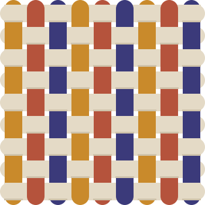

Hilo del aula
Kinesis
Para docentes, orientación escolar y familias. El docente planea con Diseño Universal para el Aprendizaje y ve al lado los apoyos de cada estudiante. La información clínica queda aislada y solo la ve quien tiene permiso.
Colectivo de educación inclusiva con tecnología
Tejemos caminos para aprender.
En cada salón hay un mosaico de formas de aprender, pero las clases suelen planearse para un solo camino. Tres proyectos de estudiantes se tejen aquí para que el docente planee una clase inclusiva, la orientación la valide, la familia la vea y cada estudiante la reciba a su medida.

En Colombia, todo colegio debe elaborar un plan individual de ajustes razonables (PIAR) para cada estudiante con discapacidad. En la práctica, ese plan queda en una carpeta y el docente adapta la clase después de darla.
Estas cifras miden discapacidad. Nuestra propuesta es más amplia: todos aprendemos distinto, y por eso todos somos parte del mosaico.
Cada proyecto nació de una necesidad distinta, conserva su nombre, su código y su autonomía. Mosaico Telar los une porque el problema es el mismo.
Hilo del aula
Para docentes, orientación escolar y familias. El docente planea con Diseño Universal para el Aprendizaje y ve al lado los apoyos de cada estudiante. La información clínica queda aislada y solo la ve quien tiene permiso.
Hilo del estudiante
Para estudiantes. Material interactivo para aprender inglés, pensado para que cada estudiante avance a su ritmo.
Hilo de la guía
Una asistente de inteligencia artificial, en español e inglés, que atraviesa los otros dos hilos: ayuda al docente a diseñar y al estudiante a resolver sus dudas. Propone; el docente decide.
En integración
¿Por qué telar? Porque tejer es un proceso artesanal donde varios hilos hacen una sola tela. La urdimbre es la malla curricular; la trama, los ajustes de cada estudiante.
Un ejemplo con una estudiante ficticia. Así viaja un ajuste desde el docente hasta el estudiante.
En Kinesis ve qué apoyos le sirven a cada estudiante, sin diagnósticos a la vista.
Funciona hoyLa asistente propone una actividad con Diseño Universal para el Aprendizaje.
En integraciónLa actividad cambia según los apoyos del estudiante, y cada cambio explica por qué.
VieneNada llega al estudiante sin la validación del equipo de orientación.
VieneSe entera mientras ocurre, no en la entrega de notas.
VieneEn Wisfox recibe la actividad adaptada y le pregunta sus dudas a ValerIA.
En integraciónLo que decimos que funciona, funciona; lo que viene, lo decimos. El recorrido completo se muestra con datos ficticios.
No diagnosticamos, no reemplazamos al equipo interdisciplinario del colegio y no decidimos por el docente.
Trabajamos con información de menores de edad. Por eso la regla es clara: hoy todo lo que se muestra es ficticio.
Política de tratamiento de datos, autorización de las familias, contrato con el colegio, cifrado y una revisión de seguridad independiente.
En Kinesis el diagnóstico vive aparte y solo lo ve quien tiene permiso explícito.
Solo trabaja con perfiles ficticios, sin acceso a bases de datos ni herramientas. Sus respuestas son propuestas, no decisiones.
Cada cambio lo lee otra persona antes de publicarse, y cada proyecto tiene una persona responsable de los datos y las claves.
Estamos buscando colegios que quieran probar esto en su aula y personas que quieran sumarse al equipo.
Probamos el paquete sin costo, con datos ficticios al comienzo, a cambio de que nos ayudes a medir si sirve.
Si quieres enterarte cuando haya una versión para usar, cuéntanoslo en la conversación pública del proyecto.
Desarrollo de actividades, diseño, contenido pedagógico, datos y seguridad. Cada rol tiene un alcance claro.
Esa conversación es pública. No escribas allí datos personales ni información de estudiantes.